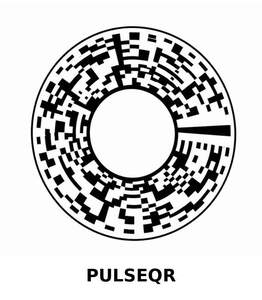

Trade Mark Journal No.2026/009 27 February 2026
UK00004317405 30 December 2025 (9,35,42,45)

- Class 9
- Computer software and mobile application software for generating, displaying, reading, scanning and verifying QR codes; computer software for authentication, security verification, anti-counterfeiting, provenance verification, product traceability and digital certification; cryptographic software; encryption and digital signature software; software for tokenisation, unique identifier generation and validation; software for verifying product origin, authenticity and ownership; downloadable digital tokens and digital certificates; downloadable software for managing and verifying digital identities, digital credentials and digital passes; software for supply chain tracking and verification; software for inventory, asset and item tracking; electronic labels and tags incorporating QR codes, NFC, RFID or other machine-readable technologies; security labels and tamper-evident labels incorporating QR codes or machine-readable identifiers; encoded tags, smart labels and holographic labels; QR code labels, stickers, plates and printed markers; authentication devices and scanners; electronic verification devices; data processing apparatus; computer hardware for encoding and reading machine-readable codes.
- Class 35
- Business management and marketing services relating to product authentication, provenance verification, anti-counterfeiting and brand protection; administration of customer loyalty, verification and product registration programmes; business consultancy and advisory services relating to product traceability, digital authentication and counterfeit prevention; commercial information services relating to the verification of authenticity and product origin; Retail and wholesale services connected with the sale of downloadable authentication software; downloadable verification software; QR code authentication software; digital ticket verification software; machine-readable authentication tokens; digital access credentials; and security authentication devices; compilation and analysis of business data relating to counterfeit activity, product tracking and consumer engagement; advertising, marketing and promotional services using QR codes and machine-readable codes; brand strategy and brand protection consultancy.
- Class 42
- Software as a service (SaaS) and platform as a service (PaaS) featuring software for generating, managing, distributing, scanning and verifying QR codes and machine-readable identifiers; SaaS for authentication, provenance verification, anti-counterfeiting, product traceability and digital certification; SaaS for cryptographic verification, encryption, digital signatures and secure identifier validation; hosting of digital platforms and online portals for verification, registration, authenticity confirmation and consumer engagement; cloud computing services relating to verification, authentication and traceability; design, development and maintenance of computer software for QR code generation and verification, digital authentication, product provenance and anti-counterfeiting; technological consultancy in relation to QR-enabled authentication systems and security verification; providing temporary use of online non-downloadable software for tracking and verifying product origin, chain of custody and authenticity; data encryption services; cybersecurity services; blockchain as a service (BaaS); providing online non-downloadable software for managing digital certificates, credentials and verification records.
- Class 45
- Security services relating to product authentication, provenance verification and anti-counterfeiting; monitoring and reporting services relating to counterfeit detection and brand protection; investigation and verification services relating to product authenticity and suspected counterfeit goods; advisory services relating to the prevention and detection of counterfeiting and fraud; regulatory compliance advisory services relating to authentication and verification systems (non-legal).
Stuart F Murphy